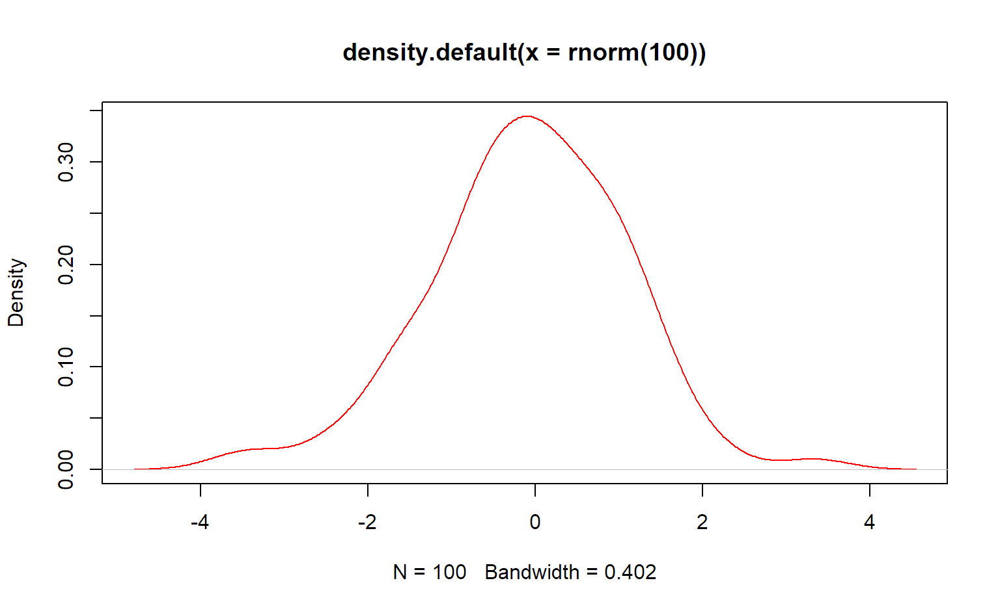

А. М. Ярославцев
(перед началом работы, чтобы убедиться, что графическая система работает корректно)

(переменной x присваивается значений 5. Команды разделяются “;”)
## [1] 5## [1] 5## [1] 5функция c() - соединяет элементы в вектор
## [1] 1 3 6 7Вектор преобразуется к данным одного типа
## [1] "8" "dds" "TRUE"## [1] 1.0 0.0 1.0 1.1 1.0Приоритет: Char(Текстовый)-> Numerical(Колич.)-> Logic(Логический)
x=function(arg1,arg2,…)
function - это собственное имя функции, оно приводит к вызову функции
arg1, arg2… - аргументы функции:
log(x,base)
log - имя функции;
x, base - аргументы узнаются по порядку перечисления
## [1] 0.0000000 0.4771213 0.7781513 0.8450980log(base=base,x)
аргумент base задан по имени
## [1] 0.0000000 0.4771213 0.7781513 0.8450980<, >, <=, >=, ==(тождество)
## [1] FALSE## [1] TRUE## [1] TRUE+, -, *, /, ^, sin(), cos(), sqrt()-корень, log()
## [1] 1e+10x = 10/(5 - 5)
## [1] InfInf - знак бесконечности
## [1] 10 20 25 15 -20 0## [1] 10 12 25 9 -20 0## [1] 2 4 5 3 -4 0## Warning in x * z: longer object length is not a multiple of shorter object
## length## [1] 2 8 15 12 -4 0Длины векторов должны быть кратны
## [1] 6## [1] 2.8## [1] 2.8## [1] 2 3 4 5 6 7 8 9 10## [1] 5.1 4.1 3.1 2.1 1.1## [1] -5 -4 -3 -2 -1 0 1 2 3 4 5 6 7 8 9 10## [1] -5 -6 -7 -8 -9 -10seq(from= ,to= ,by=)
## [1] 2.0 2.5 3.0 3.5 4.0 4.5 5.0## [1] 9.0 8.5 8.0 7.5 7.0 6.5 6.0 5.5 5.0 4.5 4.0 3.5 3.0 2.5## [1] 14## [1] 7## [1] 18.00 21.25 24.00 26.25 28.00 29.25 30.00 11.00 12.50 13.50 14.00
## [12] 14.00 13.50 12.50rep(x, times=)
## [1] "A" "B" "C" "A" "B" "C" "A" "B" "C" "A" "B" "C"mode(x)
## [1] "numeric"## [1] FALSE FALSE FALSE FALSE FALSE FALSE FALSE FALSE FALSE FALSE## [1] "logical"## [1] "character"## [1] 1 2 3 4 5 6 7 8 9 10 11 12 13 14 15 16 17 18 19 20## [1] 2## integer(0)## [1] 5 6 7 8 9## [1] 3 7 8 9 20## [1] 1 2 3 4 5 6 7 8 9 10 11 12 13 14 15 16 17 18 20## [1] 7 8 9 10 11 12 13 14 15 16 17 18 19 20## [1] 11 12 13 14 15 16 17 18 19 20## [1] 1 2 3 4 5 6 7 8 9 10 11 12 13 14 15 16 17 18 19 20## [1] 1 3 5 7 9 11 13 15 17 19создание пустого ветора
## NULL## [1] TRUE FALSE TRUE TRUE FALSE TRUE## [1] FALSE TRUE FALSE TRUE TRUE FALSE TRUE## [1] 5 1 2 3## NULLзадание имен для элементов вектора
## [1] "Первый" "Второй" "Третий" "Четвертый" "Пятый"## Первый
## 1подтверждение, что логарифм натуральный
## [1] TRUEобращение к последнему элементу вектора
## [1] 100order(x) показывает номера элементов в порядке возрастания значений
## [1] 5 1 8 7 2 6 4 3sort(x) проводит упорядочивание элементов вектора
## [1] -98 -10 -8 0 2 23 34 78## [1] TRUE TRUE TRUE TRUE TRUE TRUE TRUE TRUE## [1] -8.0 -7.5 -7.0 -6.5 -6.0 -5.5 -5.0 -4.5 -4.0 -3.5 -3.0 -2.5 -2.0 -1.5
## [15] -1.0 -0.5 0.0 0.5 1.0 1.5 2.0 2.5 3.0 3.5 4.0## [1] -8.0 -7.5 -7.0 -6.5 -6.0 -5.5 -5.0 -4.5 -4.0 -3.5 -3.0 -2.5 -2.0 -1.5
## [15] -1.0 -0.5 0.0 0.5 1.0 1.5 2.0 2.5 3.0 3.5 4.0## [1] 4.0 3.5 3.0 2.5 2.0 1.5 1.0 0.5 0.0 -0.5 -1.0 -1.5 -2.0 -2.5
## [15] -3.0 -3.5 -4.0 -4.5 -5.0 -5.5 -6.0 -6.5 -7.0 -7.5 -8.0Вставьте число 99 в середину вектора a для округление используйте функцию round
## [1] -8.0 -7.5 -7.0 -6.5 -6.0 -5.5 -5.0 -4.5 -4.0 -3.5 -3.0 -2.5 -2.0 -1.5
## [15] -1.0 -0.5 0.0 0.5 1.0 1.5 2.0 2.5 3.0 3.5 4.0## [1] 25## [1] 12## [1] -8.0 -7.5 -7.0 -6.5 -6.0 -5.5 -5.0 -4.5 -4.0 -3.5 -3.0 -2.5 99.0 -2.0
## [15] -1.5 -1.0 -0.5 0.0 0.5 1.0 1.5 2.0 2.5 3.0 3.5 4.0## [1] 0.0 1.5 2.0## [1] 0.0 1.5 2.0## [1] TRUE TRUE TRUEВспомним, что можно задать имена элементам вектора
x = c(sin(10), log(5,8), log(3,exp(1)), log(38.6,10), cos(pi + 1), exp(1)^(cos(0)), atan(+Inf))
names(x) = c("sin(10)", "log8(5)", "ln3", "lg(38.6)", "cos(pi+1)", "e^cos(0)", "arctn(+Inf)");
sort(x)## sin(10) cos(pi+1) log8(5) ln3 arctn(+Inf) lg(38.6)
## -0.5440211 -0.5403023 0.7739760 1.0986123 1.5707963 1.5865873
## e^cos(0)
## 2.7182818A U B - объединение
## [1] -10 -9 -8 -7 -6 -5 -4 -3 0 1 2 4 5 6Cпециальный класс векторов - факторы (factors) предназначен для хранения кодов соответствующих уровней номинальных признаков (классификаторов).
Для преобразования числового (или текстового) вектора в фактор в R существует одноименная функция factor(), например: x = factor(“Mouse”)
f = c(rep("mouse", 3), rep("rat", 2), rep("fly", 11))
f = rep(c("mouse", "rat", "fly"), c(3, 2, 11))
summary(f)## Length Class Mode
## 16 character character## fly mouse rat
## 11 3 2## Min. 1st Qu. Median Mean 3rd Qu. Max.
## 1.00 3.25 5.50 5.50 7.75 10.00## Mean
## 5.5## A C G T
## 10 16 48 26## [1] 100## A C G T
## 0.10 0.16 0.48 0.26## [1] G T G G G C T G G G A G G A T T A G G G T G C G T C G A G T C T G C T
## [36] T G G G T G C G G G G G G G G G T C T G C G G G T G G G T G G A G G A
## [71] G A G C C T T C C T C C A T T A T C T G G G T T G C T G T A
## Levels: A C G T#sample(dna,size = 104, replace = FALSE) выдаст сообщение об ошибке
sample(dna, size = 30, replace = F)## [1] G G T G G C T G G G G T G C G C G T T G G C T C C T G G T C
## Levels: A C G T## A C G T
## 0.10 0.16 0.48 0.26sampledna = sample(dna, size = 100000, replace = TRUE)
ratio1 = summary(factor(sampledna)) / length(sampledna); ratio1## A C G T
## 0.10006 0.15993 0.48100 0.25901sampleATGC = sample(c("A","T","G","C"), size = 100000, replace = TRUE)
ratio2 = summary(factor(sampleATGC)) / length(sampleATGC); ratio2## A C G T
## 0.24938 0.25156 0.24945 0.24961## [1] 1 2 3 4 5 6 7 8 9 10 11 12 13 14## [1] 6 7 8 9 10## [1] 1 2 3 4 5## [1] 11 12 13 14расчет кумулятивного значения
## [1] 1 3 6 10 15 21 28 36 45 55dna2=sample(c("A","T","G","G","G","C"), size=3826513,replace=TRUE)
ratio=summary(factor(dna2))/length(dna2); ratio## A C G T
## 0.1665893 0.1665647 0.4999709 0.1668752dna2=sample(c("A","T","G","C"), size=3826513,prob=c(.5/3,.5/3,.5,.5/3),replace=TRUE)
ratio=summary(factor(dna2))/length(dna2); ratio## A C G T
## 0.1667513 0.1664824 0.4998846 0.1668817см. далее